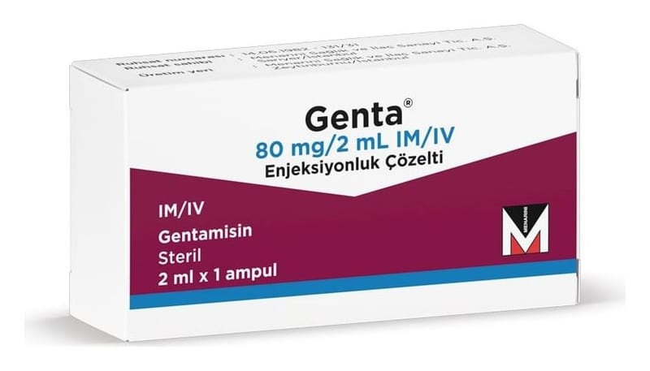

Genta 80 mg/2 ml IM/IV Enjeksiyonluk Çözelti, 1 Adet

Ne için kullanılır
KT · Bölüm 1● GENTA, etkin maddesi gentamisin olan bir enjeksiyonluk çözelti içeren ampul şeklinde sunulmaktadır.
● GENTA, aminoglikozit grubu antibiyotiktir.
● Her kutuda 2 ml'lik 1 adet ampul içeren ambalajlarda bulunmaktadır. Bu ilacı kullanmaya başlamadan önce bu KULLANMA TALİMATINI dikkatlice okuyunuz, çünkü sizin için önemli bilgiler içermektedir. • Bu kullanma talimatını saklayınız. Daha sonra tekrar okumaya ihtiyaç duyabilirsiniz. • Eğer ilave sorularınız olursa, lütfen doktorunuza veya eczacınıza danışınız. • Bu ilaç kişisel olarak sizin için reçete edilmiştir, başkalarına vermeyiniz. •Bu ilacın kullanımı sırasında, doktora veya hastaneye gittiğinizde doktorunuza bu ilacı kullandığınızı söyleyiniz. •Bu talimatta yazılanlara aynen uyunuz. İlaç hakkında size önerilen dozun dışında yüksek veya düşük doz kullanmayınız .
● GENTA bakteriler tarafından kaynaklanan enfeksiyonları tedavi etmek için kullanılır. Bu enfeksiyonlar şunları içerir: - İdrar yolu enfeksiyonları (böbrek ve mesane dahil) - Göğüs enfeksiyonları (akciğerler dahil) - Karın enfeksiyonları (bağırsaklar dahil) - Beyin ve omurilik enfeksiyonları - Kan enfeksiyonları – ‘bakteremi’ veya ‘septisemi’ olarak da tanımlanabilir. - Yenidoğan bebek enfeksiyonları